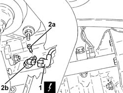

1060G20 Engine RPM SENSOR - R.R.
- Path
- Procedures > 10 ENGINE > 1060 DIESEL FUEL INJECTION SYSTEM > 1060G DIESEL INJECTION PRESSURE PUMP ELECTRONIC CONTROL > 1060G20 Engine RPM SENSOR - R.R.
- Kind
- repair procedure (removal / refitting; the operation number is the code)
- Applies to
- engines: 2.4 JTD 20V; all production periods
- Interactive page
- https://sloeber94.github.io/elrnDB-lThss/en/#/850567
Applies to: engines: 2.4 JTD 20V; all production periods
 Removing
Removing
 Refitting
Refitting- Position the vehicle on a lift.
- Disconnect the negative battery terminal.
See in Op. 7055B54 PROTECTION/GUARD under engine - R.R.
1. Disconnect the electrical connection from the engine rpm sensor.
 | Description | Connector |
|---|---|---|
1 | Rpm sensor | K046 |
2. Undo the bolt (2a) and remove the rpm sensor (2b).

Applies to: engines: 2.4 JTD 20V; all production periods
Refitting
Removing- Fit the rpm and timing sensor and secure it using the bolt.
- Connect the electrical connection for the engine rpm sensor.
| Description | Connector |
|---|---|---|
. | Rpm sensor | K046 |
See in Op. 7055B54 PROTECTION/GUARD under engine - R.R.
- Connect the negative battery terminal.
- Remove the vehicle from the lift.